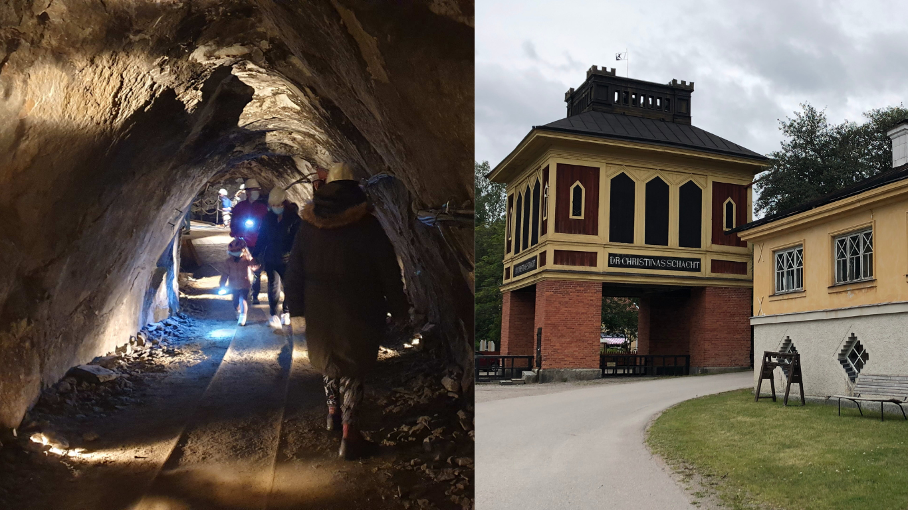
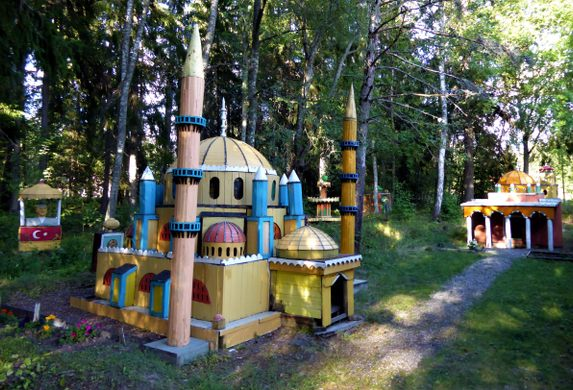
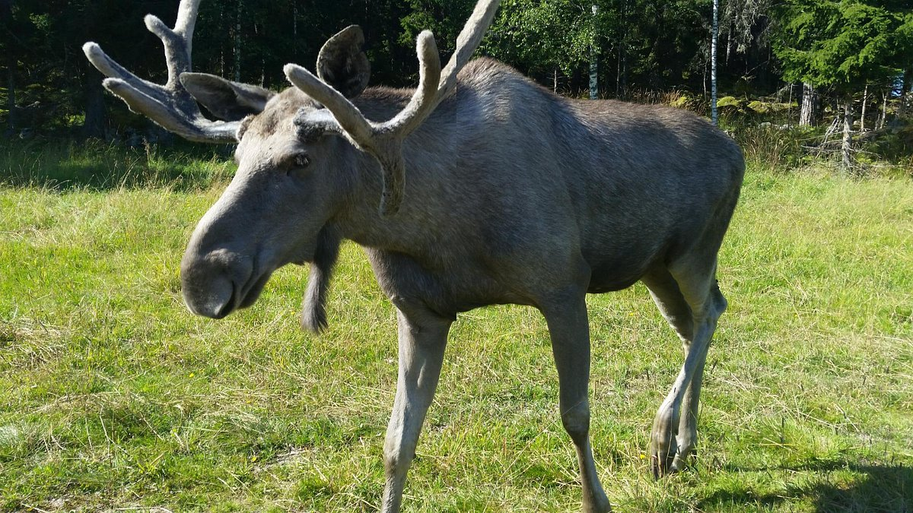

Welcome To Sala
Sala becoming 400 years
popular place in sala
Sala Silver Mine Hotel Suite
This underground hotel suite, located 155 meters (508 feet) below the surface in the Swedish town of Sala, was originally carved out by miners over a decade using a method known as fire-setting. It's part of a historic silver mine that operated for four centuries. Today, you can enjoy a unique and comfortable stay in this space, complete with a double bed, silver decor, and champagne. While the surrounding tunnels maintain a chilly 2°C (35°F), the hotel room itself is kept at a cozy 18°C (64°F). Please note that there is no cell phone service in the mine, but you can use an intercom to reach the on-call staff for any assistance you may need during your stay. As of July 2020, both the mine and hotel are temporarily closed for renovations, and they plan to reopen afterward.
Litlel Istanbu
Jan-Erik Swennberg's love for Turkey led to the creation of a backyard mini-city near Sala, Sweden. Diagnosed with Asperger's Syndrome at a young age, Jan-Erik developed an intense passion for Turkey, particularly Istanbul, during a trip in 1979. This fascination inspired him to recreate Istanbul's iconic buildings in his family garden. What makes this mini-city unique is that it's entirely based on Jan-Erik's personal perspective, without any formal plans or blueprints. He used salvaged materials from local sources to construct around 20 model buildings, including the Sultan Ahmed Mosque (Blue Mosque), Dolmabahçe Palace, and more. Despite initial skepticism from his father, the mini-city was well-received, and it remains an impressive testament to Jan-Erik's dedication to his Turkish passion.
Gardsjo Algpark
Visit Gardsjo Algpark, the ultimate moose farm experience. Hop on an historic tractor as it takes you into a fenced forest, the King of the Forest's own domain. Here, you'll get up close and personal with typical Swedish moose, from impressive bulls to beautiful cows and mischievous youngsters. You might even have the chance to interact with them. Our knowledgeable guide will provide fascinating insights into these magnificent animals. After your encounter, enjoy a coffee and explore our delightful shop.